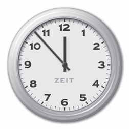
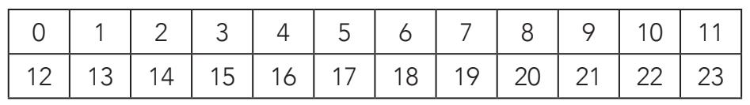
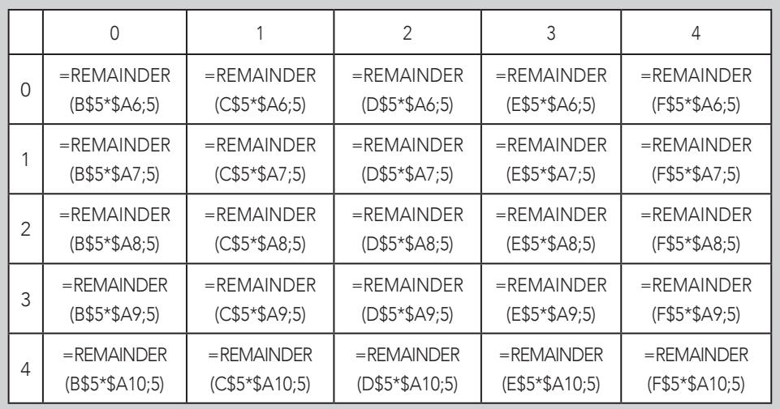
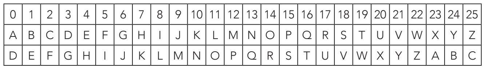

16=4？2=14？这可不是计算错误，也不是什么奇怪的编号系统。恺撒密码的运算，甚至是密码学中的运算，都可以用数学中常见的公式来表达，那就是“模运算”，有时也称“时钟算术”。这一技术源于古希腊数学家欧几里得（前325-前265）的著作，同时它还是现代情报安全的基石。本节我们就来介绍与这类算法相关的数学概念。


以经典的指针式钟表为例，把它与电子表做对比。指针式钟表把圆形表盘分为12个部分，每个部分代表一个小时，写作：0、1、2、3、4、5、6、7、8、9、10、11。从上表中，我们可以看出指针式钟表表盘上的数字和电子表显示的数字对午后的12小时的对应关系。
分析加密之父
《几何原本》是欧几里得的主要著作，共13卷，内容涉及平面几何、比例、数字的性质、无理数和空间几何。尽管大多数内容都与最后这个领域相关，但古希腊数学家的著作与数的有限集合或系数，构成了现代密码学的基石之一。虽然欧几里得几何在阿拉伯学者之间广为流传，备受推崇，但是直到1482年，第一部现代欧洲版的欧几里得著作才出现在威尼斯。如此看来，阿拉伯人和威尼斯人都精通密码术也就不是巧合了。
比如，说到现在“14:00”整，同样也是在说现在是下午2点。角度的计算运用同样的原则。一个大小为370°的角等于大小为10°的角，因为一个完整的360°过后，要再从头开始计算。注意370=(1×360)+10，同样的，10也是370减去360的得数。那么750°对应的角度是多少呢？完全旋转两圈后，发现750°的角就等于30°的角。由此我们可以总结出：750=2×360+30，而30是750除以360之后的余数。数学表达为：
750≡30(mod.360)
其中≡表示“被界定为”，读作“750对模360同余的数字为30”。切换回钟表，公式写作：14≡2(mod.12)。
同样，我们也可以想象一块有“负数”的钟表。当时针指向-7时，是几点呢？或者换句话说，与-7对模12同余的数字是多少？计算时，我们应记住，在分成12个部分的表盘上，0对应的值等于12：
同余运算
如何用计算器计算出与231对模17同余的数字？
首先计算231除以17，得出13.5882352。
然后算出乘积，即13·17=221，这样就去掉了所有的小数。
最后再做减法，即231-221=10，得出除法运算后的余数。
231对模17同余的数字就是10，写作：231≡10（mod.17)。
-7=-7+0≡-7+12=5
分为12个部分的指针式钟表的数学计算叫作对模12的运算。一般来说，数字a、b和m都是整数，如果a和m相除的余数是b，那么就可以说a≡b(mod.m)，b等于a除以m所得的余数。下面的表达式意义相同：
a≡b(mod.m)
b≡a(mod.m)
a-b≡0(mod.m)
a-b等于m的倍数
“指针式钟表上19时是几点？”用数学术语表达，即“与19对模12同余的数字是什么？”回答这个问题，我们就必须要解出这个方程：
19≡x(mod.12)
19除以12，商为1，余数为7，因此：
19≡7(mod.12)
那么127时又是几点呢？127除以12，商为10，余数为7，所以：
127≡7(mod.12)
把刚刚学的内容巩固一下，如果模为7，我们来检查一下下面的运算：
（1）3+3≡6
（2）3+14≡3
（3）3·3=9≡2
（4）5·4=20≡6
（5）7≡0
（6）35≡0
（7）-44=-44+0≡-44+7·7≡5
（8）-33=-33+0≡-33+5·7≡2
（1）6小于模，因此不变
（2）3+14=17；17:7=2……3
（3）3·3=9；9:7=1……2
（4）5·4=20；20:7=2……6
（5）7=7；7:7=1……0
（6）35=35；35:7=5……0
（7）-44=-44+0；-44+(7·7)=5
（8）-33=-33+0；-33+(5·7)=2
用Excel运算模为5的乘法表
模为5的乘法表如下：
0 1 2 3 4
0 0 0 0 0 0
1 0 1 2 3 4
2 0 2 4 1 3
3 0 3 1 4 2
4 0 4 3 2 1
如果你对Excel的操作稍微有点了解，运算模为5的乘法表以及类似的表格都会易如反掌。在我们的例子中，计算机上的Excel表达式（即所在行和列的位置）如下表所示。“被5整除后的余数”用Excel语言表达是“=remainder(number；5)”。计算模为5的4乘以3乘积的有效指令为“=remainder(4×3；5)”，运算得出答案为2。这样的表格在进行模运算计算时会有很大帮助。

那么模运算与恺撒密码之间有怎样的关系呢？回答这个问题，我们需要准备一个常规字母表和一个位移三个字母后的字母表，然后给字母表加上对应的序号。

我们发现，加密字母表中序号为x的字母就是明文中序号为x+3的字母。因此，关键就是找出明文中每个字母对应的序号和加密规则（位移三个之后）对应的序号之间的转换规律，即计算模为26的结果。注意密钥是3，因此它的函数表达式为：
C(x)=x+3(mod.26)
x为未加密的序号，C（x）是加密后的序号。也就是说，替换序号对应的字母，再进行转换就够了。以信息“PLAY”为例，我们给它加密：
P的明文序号为15，C(15)=15+3≡18（mod.26)，对应的加密字母为S。
L的明文序号为11，C(11)=11+3≡14（mod.26），对应的加密字母为O。
A的明文序号为0，C(0)=0+3≡3(mod.26)，对应的加密字母为D。
Y的明文序号为24，C(24)=24+3=27≡1(mod.26)，对应的加密字母为B。
那么，密钥为3，信息“PLAY”加密后即“SODB”。
通常，如果x代表我们要加密字母的位置（0对A，1对B,等），C(x)表示加密后字母的位置，那么公式为：
C(x)=(x+k)(mod. n)
其中n=字母表的长度（如英文中为26个字母），k=密钥，转换加密信息时就根据k的值。
对这样一条信息进行解密就是逆向操作加密过程。还以刚才的为例，解密即运用加密公式的逆向公式：
C-1(x)=(x-k) (mod.n)
以用恺撒密码加密的信息“SODB”为例，英文字母表中密钥为3，即k=3，n=26，因此：
C-1(x)=(x-3) (mod.26)
过程如下：
通过x=18，C-1(18)=18-3≡15(mod.26)，计算得出，S的对应字母是P。
通过x=14，C-1(14)=14-3≡11(mod.26)，计算得出，O的对应字母是L。
通过x=3，C-1(3)=3-3≡0(mod.26)，计算得出，D的对应字母是A。
通过x=1，C-1(1)=-2+26≡24(mod.26)，计算得出，B的对应字母是Y。
用恺撒密码加密，密钥为3的信息“SODB”，解密后的明文，就是“PLAY”。
我们刚刚初试了密码学中的数学，总结起来就是：可以创建一种新的转换模式，人们称之为仿射密码，广义上说就是恺撒密码，用公式表达是：
C(a,b)(x)=(ax+b)(mod.n)
n表示字母表中的字母数，a和b都是小于n的整数。a和n之间的最大公约数是1[gcd(a,n)=1]，因为在其他情况下，加密时有可能出现相同字母具有不同的表达，这点我们稍后会细说。加密的密钥由数字对（a,b）确定。因此，密钥为3的恺撒密码，即为a=1、b=3的仿射密码。
像这样的仿射密码比传统的恺撒密码安全性高吗？我们已经知道，仿射密码的密钥是数字对（a,b），那么如果信息是由26个字母写成并用仿射密码加密，那么a和b就可以取介于0和25之间的任意值。因此，像这样由26个字母编写的信息，其加密系统的密钥数为：25·25=625。根据观察，由n个字母编写的信息，其密钥数比恺撒密码的密钥数大n倍。尽管密钥数增长很多，但如果暴力破解的话，依然不是什么难事。
最大公约数（GCD）
两个数字的最大公约数可以用欧几里得算法（简称“欧式算法”）求出。欧式算法即辗转相除，先将两个数字相除，如余数不为0，则继续用除数和得出的余数相除，直到余数为0。余数为0时，最后一次相除的除数就是两数的最大公约数。例如：
gcd(48，30)？
48÷30=1……18
30÷18=1……12
18÷12=1……6
12÷6=2……0
此次计算得到的结果为：
gcd(48，30)=6
如果gcd(a,n)=1，那么就可以说a和n为互质数。
裴蜀定理在密码学中有着十分重要的意义，该定理的内容是对于大于0的两个整数a和n，存在整数k和q，满足gcd(a,n)=ka+nq。